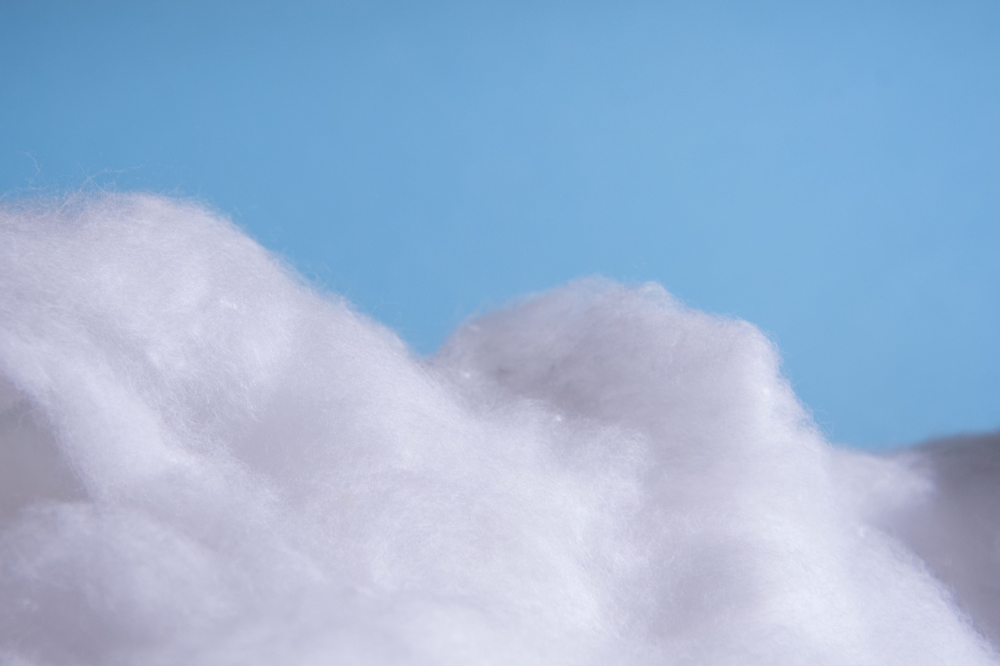
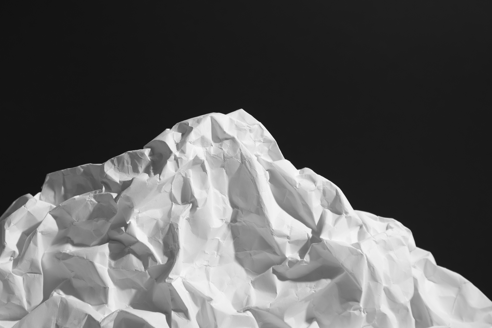
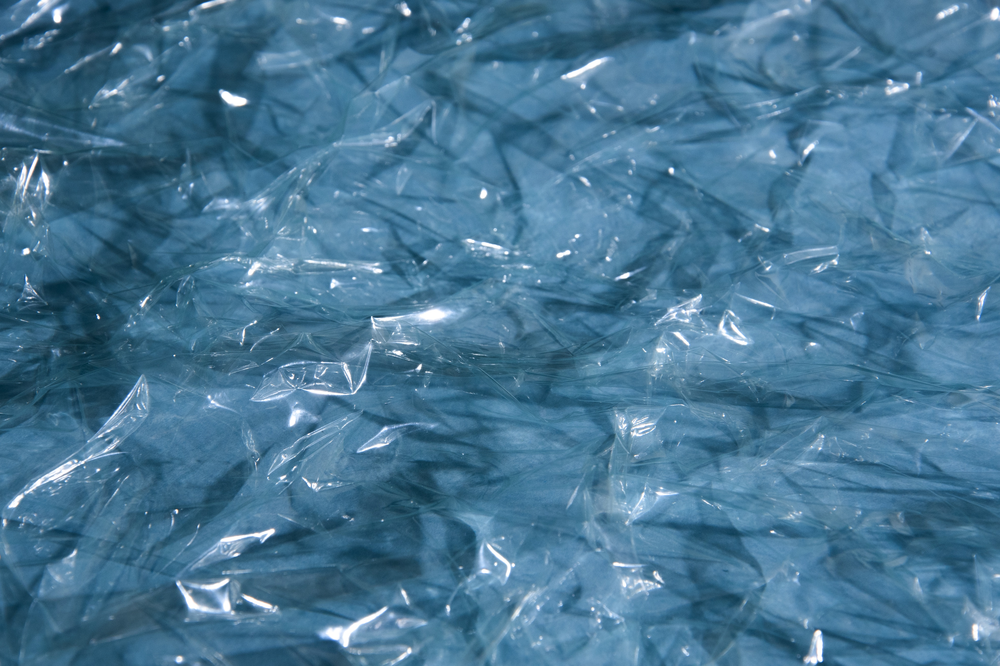
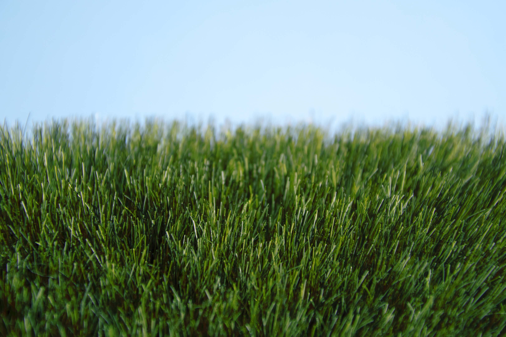

Wie sieht Natur aus, wenn sie nicht mehr echt ist? Aluminium ersetzt die Sonne, Textil wird zu Wolken, Papier zu einem Berg, Lebensmittel zu Hügeln, Plastik zu Wasser und Wiese, Glas zu Eis. Aus Abfall entstehen Landschaften – künstlich gewachsen, täuschend echt. Die fotografische Inszenierung zeigt Natur, wo keine mehr ist, und lässt die Grenze zwischen Schönheit mit Zerstörung verschwimmen. Das Plakat ist wie eine ideale Welt aufgebaut, klar gegliedert in Spalten, die die verschiedenen künstlichen Naturwelten voneinander trennen.




Übergänge
Wo beginnt das Künstliche, und wo hört das Natürliche auf? Die Zeitung baut auf dem Plakat auf und erzählt diese Entwicklung als visuelle Abfolge. Zu Beginn zeigen die Seiten reale Landschaften: Wasser, Wiese, Himmel, Licht. Schritt für Schritt verwandeln sich die Bilder und Materialien übernehmen die Formen der Natur. Papier wird zu einem Berg, Kunststoff zu Wasser, Metall zu Sonne. Eine handgeschriebene Schrift fügt sich hinzu und bringt das Menschliche, das Unregelmässige zurück. So entsteht ein Spannungsfeld zwischen Natürlichkeit und Konstruktion.